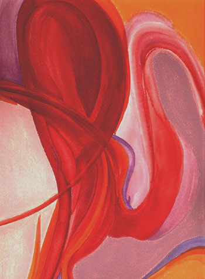

Memiel: Sensored Magazine Review

Memiel
Spoken word and jazz CD
Words and Painting by Amy Jackson
Review by Brecca Theele, Sensored Magazine (sensored.com),
Nashville, TN
I sit at my desk here at work and review the envelope handed to me last night.
My first impression is positive. The title, Memiel, is interesting. The artist,
Amy Jackson, put together a great package. The cover art is beautiful, with
an
author bio, history of Memiel, resume, and lyrics all printed out. I put on
my headphones and dive into my work, ready to listen.
Nice beginning, it is like wine before dinner.
I enjoy the music and close my eyes. I see a woman by the sound of Jackson’s
voice. Long yet small, soft yet confident, I began to paint my own image.
French poetry, oozing off of long sax
notes. Wait a minute, my mood is changing. My heart is beginning to pound.
My palms are sweaty. Eyes open. Stop: the sound and the beat is rupturing
me. I am looking around embarrassed; I am at work. I think to breathe, I close
my
eyes, and tell myself to enjoy this bliss. I am taken in, sold to continue
on.
Oooh, the music. I am alive, I am woman, I am sensual, I am. I could go on and on. I am being seduced by the sound, taking time to enjoy the lure of what is next. I feel that I am being pulled in farther and farther, yet so willingly; I go with no reluctance.
I am no longer thinking in sentences, just beats. The heat in my body is very apparent now, I feel it through my limbs to my toes; I am ready to succumb to the idea of sensual pleasure, ready for the ride. The music is taking me to all my most idealistic sensual experiences. Hot, bothered, beat, and rhythm, I am a diva. It comes to an end and with the push of a button I can fall in love again and again.
I call my husband on the phone to tell him
I will be home tonight. I have to take deep breaths to come down from the
experience.
Next, I call Amy Jackson. I have to talk to the originator. She is amazing,
so ready to share the creative process. The piece Memiel came from a tough
period in her life. She was experiencing chaos, fragments of the feelings
love could offer in an idealistic world. Memiel is Jackson’s attempt
to create the experience of that idealistic love. From the slow, luring start
to the idea of never ending, Amy wrote the lyrics before she ever experienced
longevity in a relationship. For the first time in a long while I got the
artist intention just by hearing the piece. To experience love by slowly getting
in the mood, to the crescendo of the senses, Amy Jackson and Memiel take you
there.
After performing the poem as spoken word at Bean Central’s "Poetry at the Bean," Jackson and producer/engineer Jason Stelluto of Windowpane Productions worked to set it to music. Jackson charted what she heard in different sessions, and Stelluto gathered the composer and musicians. Blending a mix of Latin, jazz and hip hop, composer Karl Straub has translated Jackson’s chart into a flowing but chaotic and sensual score, evocative of Charles Mingus and Astor Piazolla. Obviously Jackson’s words did it for me, but without Straub and Stelluto, her words are far less powerful. You can purchase Memiel CD at Turtles on West End for $11.
The cd includes the full version, the music by itself, and the poem by itself for a total of about 48 minutes. The cd also features original cover art, based on the watercolor above. The price is seven dollars, plus shipping. Or, go to Turtles on West End.
music/ watercolors/ photographs/ prints / poetry / calendar / links / bio